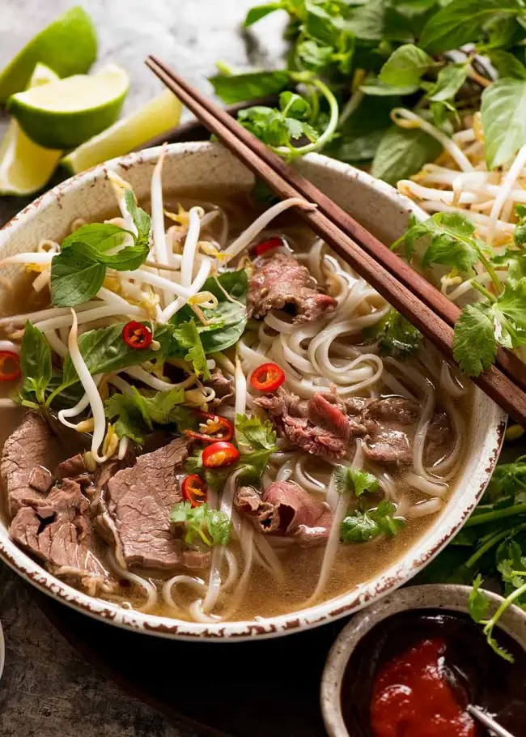

Pho

Description
Pho is a Vietnamese soup dish consisting of broth, rice noodles, herbs, and meat. It is popular in vietnam where it is served in
households, street stalls and restaurants countrywide. Pho is considered Vietnam's national dish.
This recipe will roughly take 8+ hours for an authentic pho broth.
Ingredients
Broth Ingredients
- 10 pounds beef bones (preferably a mix of marrow bones (femure bones) and bones with meat on them
- 2 medium yellow onions - peel and quarter
- 2 whole heads garlic - halved crosswise
- 4 (2-inch pieces) ginger - sliced lengthwise
- 6 whole star anise
- 12 whole cloves
- 2 whole cinnamon sticks
- 2 black cardamom pods
- 2 tablespoon fennel seeds
- 2 tablespoon coriander seeds
- 2/3 cup fish sauce
- 4 tablespoon sugar
Assembly
- 1 pound flat ice noodles - dried or fresh
- 1 pound beef:
- flank steak
- chuck roast
- brisket
- sirloin (sliced thin against the grain)
- sliced red or white onions
- fresh cilantro chopped
For the Table
- fresh mint, thai basil
- mung bean sprouts
- green onions - scallions
- sliced jalapeno
- lime wedges
- thinly sliced red chilis
- hoisin sauce
- fish sauce
- chili sauce
- bok choy
Steps
- Blanch the bones:
- divide bones between two large pots or stockpots. Cover with cold water. Bring to a boil over high heat and simmer for 15-20 minutes. Drain and rinse the bones with water.
- Toast the spices:
- add all of the spices to a large, dry skillet over low heat. Toast the spices, stirring often to prevent burning, until fragrant, approximately 5 minutes.
- Transfer the bones and veggies into the stockpots
- Bring to a boil:
- fill the pot with approximately 12 cups of water (or until bones are fully submerged), 1/3 cp fish sauce and 2 tablespoons of sugar. Bring to a boil.
- Simmer the bones:
- immediately reduce heat to low and simmer, with the lid slightly ajar, skimming any foam or excess fat/ Simmer for at least 6-12 hours, ideally 24 hours (do not leave the stove running overnight. Simply cool and store in refrigerator and continue to simmer the next day). Add more water if needed to make sure the bones stay submerged.
- Strain the broth:
- once the bones have simmered and the hot broth is ready, strain it through a fine mesh strainer or colander into a clean pot to separate the clear broth from the bones and spices.
- Season to taste:
- add additional salt, soy sauce, fish sauce, sugar or rock sugar to taste. Set aside the broth to cool (if you're not using right away) and reserve the bones.
Assembly
- Thinly slice the meat
- Cook the noodles following package instruction and put into a bowl
- Add raw meat on top of the noodles
- Pour the boiling broth over the meat
- Garnish
References